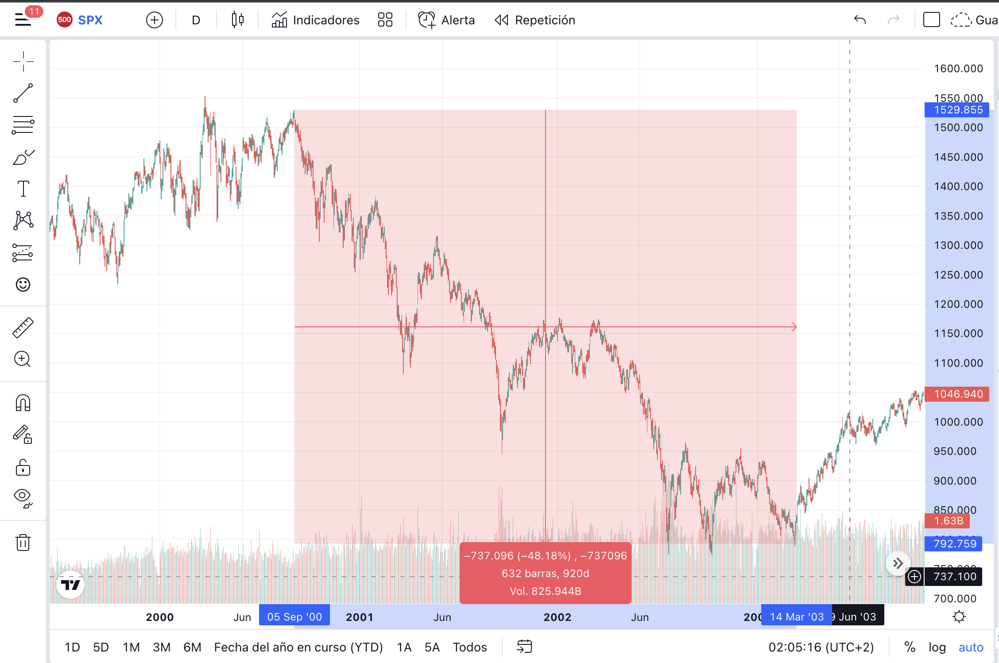
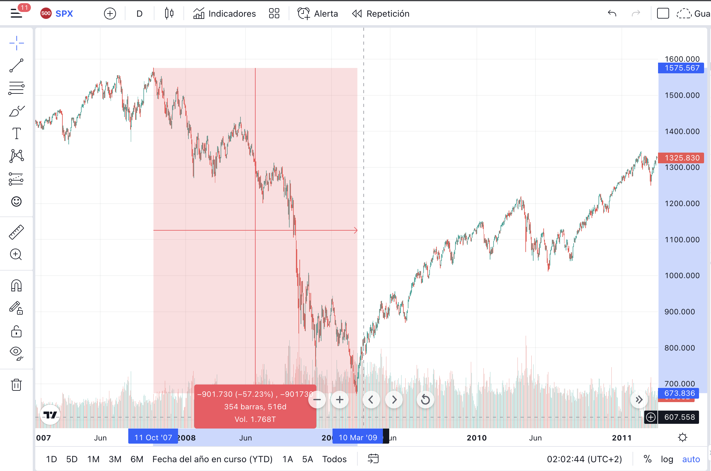
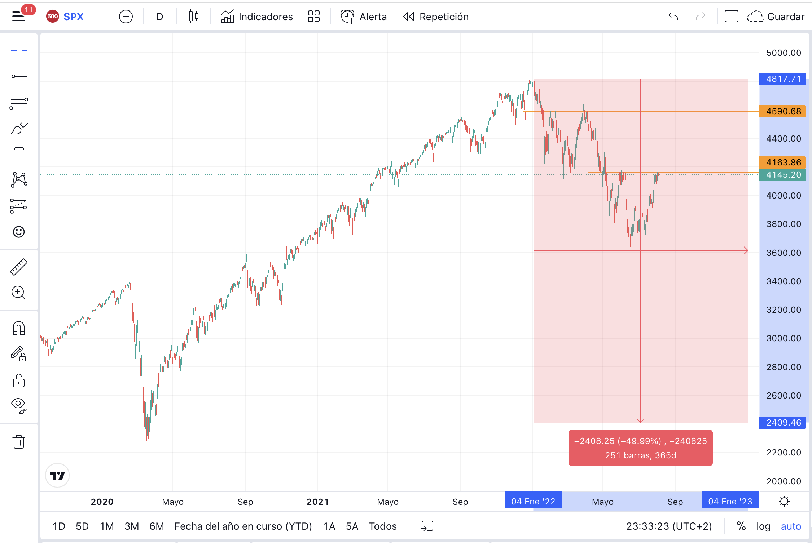

Economías y mercados globales. Definición de Recesión. ¿Estamos ante un escenario de recesión Global?

Ya habiendo hablado de los ciclos económicos con
anterioridad (sino leíste el artículo, haciendo click aquí, podrás acceder a él), quiero en este escrito generarte una
idea de en qué fase del ciclo estamos parados.
En el post anterior: Coyuntura Económica Global Post Pandemia. La pandemia, ¿un acelerador en los ciclos de la
economía? Inflación y políticas monetarias, hablamos de las medidas que se tomaron para hacer frente a la pandemia, como así también las medidas para combatir la inflación.
-Ninguna medida suele acertar con el timing, es decir, que su aplicación sea en el momento indicado, siempre suelen venir a destiempo y los efectos deseados no son inmediatos.-
También hice mención en el prólogo sobre la crisis financiera de finales de 2007 y principios del 2008 como también la crisis puntocom (.com) en el 2001. Nuevamente las
cito para compararlas entre sí, al igual que con la del Covid-19.
Antes de iniciar dejame hacer una aclaración:
los ciclos de mercado siempre se adelantan a los ciclos de la economía.
Dicho todo esto comencemos.
Si bien, definir una Recesión no es tarea sencilla, el National Bureau of Economic Research, NBER -por sus siglas en ingles-, ha definido textualmente: “una recesión implica
una disminución significativa en la actividad económica que se extiende por toda la economía y dura más de unos pocos meses”. Sin embargo, desde 1948 ha declarado recesiones,
cuando el Producto Bruto Interno sufre caídas durante dos (2) trimestres consecutivos.
A pesar de los preocupantes números, la tasa de desempleo bajo, lo que es algo positivo porque nos indica que hay menos desocupados, pero este es el argumento perfecto para
los escépticos que solo miran lo que quieren ver o dicen lo que ellos quieren que escuches.
Pese a que, comportamientos pasados no significa que se repliquen a fututo, con la siguiente comparación dejo a tu libre interpretación lo que podría significar para la
situación actual.
CRISIS PUNTOCOM (.COM)

Fuente: TradingView. Gráfico: S&P500.
Se observa en el gráfico, el comienzo del mercado bajista el 5 de septiembre del 2000,
hasta su piso el 14 de Marzo del 2003. Tuvo una caída del 48,18% aproximadamente y una duración de 920 días que equivale a dos (2) años y medio.
CRISIS FINANCIERA. BONOS SUBPRIME.

Fuente: TradingView. Gráfico: S&P500.
El mercado bajista comienza el 11 de Octubre del 2007 y finaliza el 10 de Marzo del 2009. Proyecto una caída
del 57,23% aproximadamente y duro 516 días, el equivalente aproximado de un (1) año y medio.
SITUACION DE MERCADO ACTUAL.

Fuente: TradingView. Gráfico: S&P500.
Se ve con claridad un cambio en la tendencia el 4 de Enero de 2022 y dos resistencias
(linea de color naranja) no superadas en 4590.68USD y en 4163.86 USD
De acuerdo a los dos primeros gráficos, sería probable que el repunte actual del mercado hacia los 4163.86 USD
sea una trampa alcista o Bulltrap -en inglés-, para que continúe su camino bajista hacia la zona de 2400 USD,
teniendo en cuenta que representa una caída del 50% parecida a las caídas de las crisis mencionadas anteriormente.
La duración de los mercados bajistas suele ser una aproximación promedio entre doce (12) y dieciocho (18) meses, sin embargo,
como viste en el gráfico de la crisis de los 2000 su duración ha sido mas prolongada.
Teniendo en cuenta otros factores macro económicos como: la guerra entre Rusia y Ucrania, la política “cero Covid”
en China por el rebrote en el mes de Julio, y sumado recientemente, la tensión entre Estados Unidos y China por la
visita de Nancy Pelosi, Presidente de la Cámara de Representantes de E.E.U.U, a Taiwán; se acrecienta el temor y la
incertidumbre del porvenir que se avecina, siendo poco favorable para las economías y los mercados.
Pero seguro te estarás preguntando: ¿Qué tiene que ver todo esto, si vivo en Argentina?
Déjame decirte que todo está conectado. La economía al igual que las redes, son globales. Ejemplo: La guerra entre Rusia
y Ucrania ha llevado, a qué países externos al conflicto, dejaran de importar gas ruso, viéndose afectado negativamente el
consumo debido a la escasez. En este escenario pueden suceder dos cosas: se deja de consumir gas o el que precisa de él lo
paga al precio que le pone el mercado, ya sea un precio especulativo o porque se encarecen los costos para la obtención del
mismo, entiéndase: si se compra a otro país y los costos de envío son más elevados, porque la distancia es mucho mayor o no
existe la infraestructura apropiada o eficiente para el traslado.
Para concluir, lo que quiero transmitir es que un país y su economía dependen en menor o mayor medida de otra y viceversa.
De ahí es que son tan importantes las políticas internacionales y los mercados globales pero por sobre todas las cosas la
dialéctica entre países debe ser fundamental.
Si te gusto la lectura, compártelo con amigos.
Hasta la próxima edición.
El Inversor Argentino.